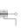

FlangeWithBearingConnector consisting of 1-dim. rotational flange and its bearing frame |
Information
This information is part of the Modelica Standard Library maintained by the Modelica Association.
This hierarchical connector models a 1-dim. rotational flange connector and its optional bearing defined by a 3-dim. frame connector. If a connection to the subconnectors should be clearly visible, connect first an instance of FlangeWithBearingAdaptor to the FlangeWithBearing connector.
Parameters (1)
| includeBearingConnector |
Value: false Type: Boolean Description: = true, if bearing frame connector is present, otherwise not present |
|---|
Connectors (2)
Used in Components (1)
|  |
Modelica.Mechanics.MultiBody.Interfaces
Adaptor to allow direct connections to the sub-connectors of FlangeWithBearing |